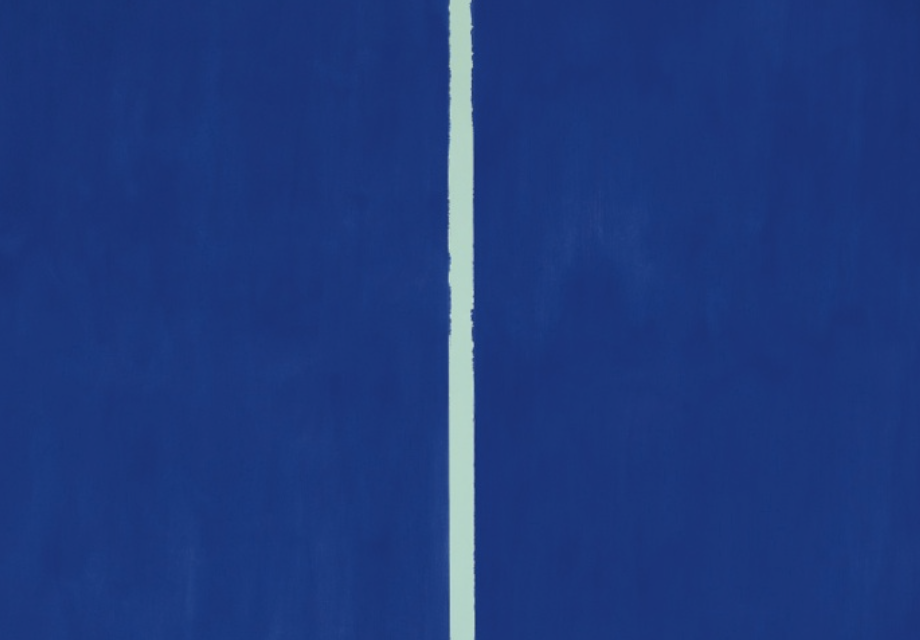
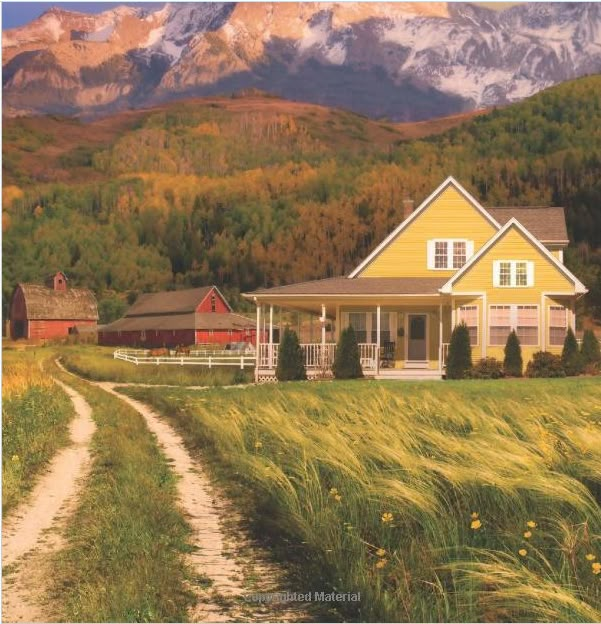
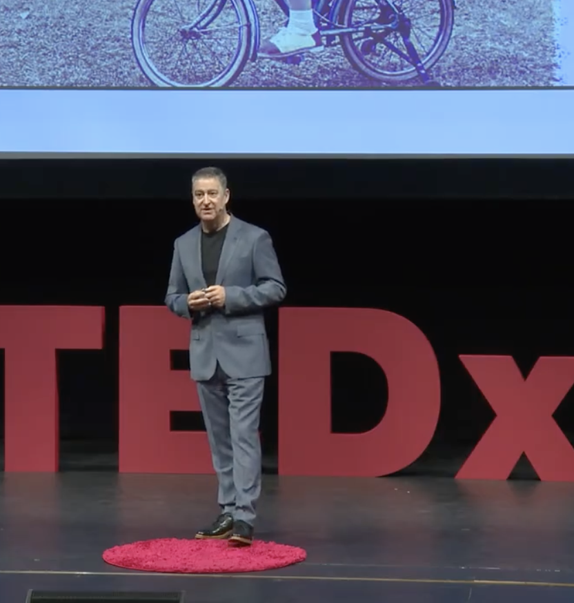

❤️
💬
📨
1.2M jaime
marc.leshh
Ma première œuvre
J'ai récemment décidé d'apprendre les complexités de l'art pour moi-même. Les bleus dans ce tableau révèlent la vulnérabilité de la couleur et ce qu'elle représente. Ce n'est pas de l'art moderne, mais plutôt un expérience viscérale.
6 heurs

❤️
💬
📨
280,872 jaime
marc.leshh
La seule place ou je peux penser et travailler en même temps. C’est comme un paysage flamand dans la vraie vie.
#viedelaferme #penseur #art
4 semaine
❤️
💬
📨
870,233 jaime
marc.leshh
Aujourd'hui, j'avais l'honeur de rencontré Mr. François Mitterrand pour discuter de l'état de notre monde culturel. Merci bien pour l'opportunité de parler avec vous @vraiprezmitterrand.
En autre nouvelles, ça serait ma dernière publication. Dorénavant, je me concentrerai sur la création artistique pour vraiment apprendre à avoir les yeux d’un artiste. Merci bien pour votre supporte.
2 mois
❤️
💬
📨
480,872 jaime
marc.leshh
J’ai vraiment aimé mon travail avec @fondationcartier– ils ont juste ouvert un nouvel espace au Paris. Une leçon rapide aujourd'hui: la Fondation Cartier a été désignée par Jean Nouvel. C’est un bâtiment moderne, pour être sûr, mais avec des éléments classiques et naturels. Nouvel est un connaisseur de mon philosophe: vous devriez avoir un contexte historique pour être un homme de votre temps. En ravanche, le bâtiment est aussi un peu compliqué pour moi– est-ce qu'il y a vraiment une signification derrière l’art ou le bâtiment? Ou est-ce que le bâtiment est juste un symbole d’art contemporain?
4 mois

❤️
💬
📨
113,892 jaime
marc.leshh
J'étais tellement surpris de voir tellement de vous à cette conférence! Merci pour le support continuel. Le conférence est sur YouTube maintenant si vous voulez regardez le vidéo, et j’ai aussi publié un article sur Substack sur Marcus Aurelius dans le contexte d’Art et culture, le lien est dans ma description!
Notre événement approche bientôt. N'oubliez pas de réserver votre place ici: lesocietyhumanitehistorique.org. Vive la société Humanité Historique!
1 day ago